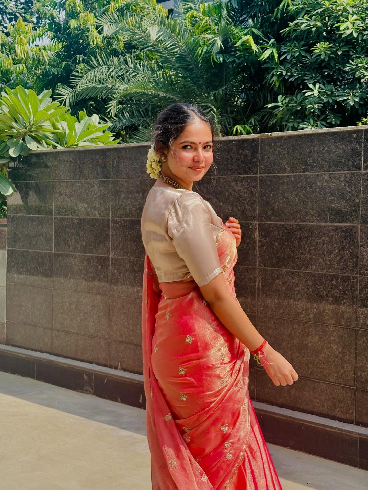
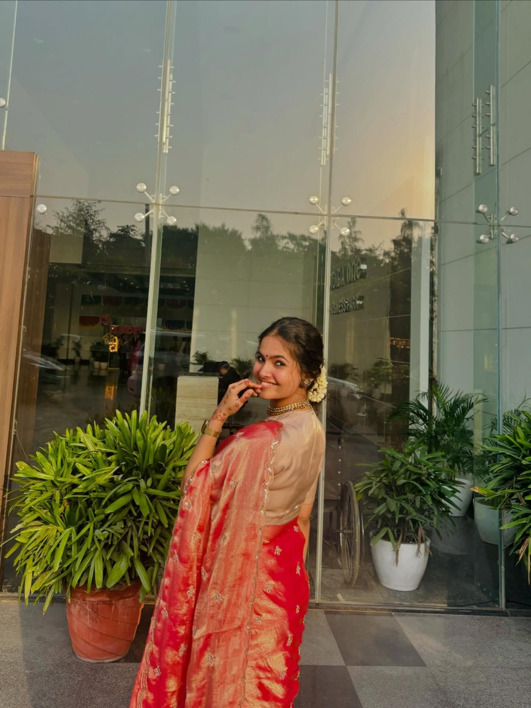

01 / PHYSICSWALLAH
Built for
momentum.
At PW, I launched CareerKaptain from zero, scaled audiences without ecosystem cross-promotion, and built the daily engine behind content that students actually choose to watch.
0 → 5K+ subscribers
3M+ views in 4 months
10K → 53K+ SSC GD MTS channel

